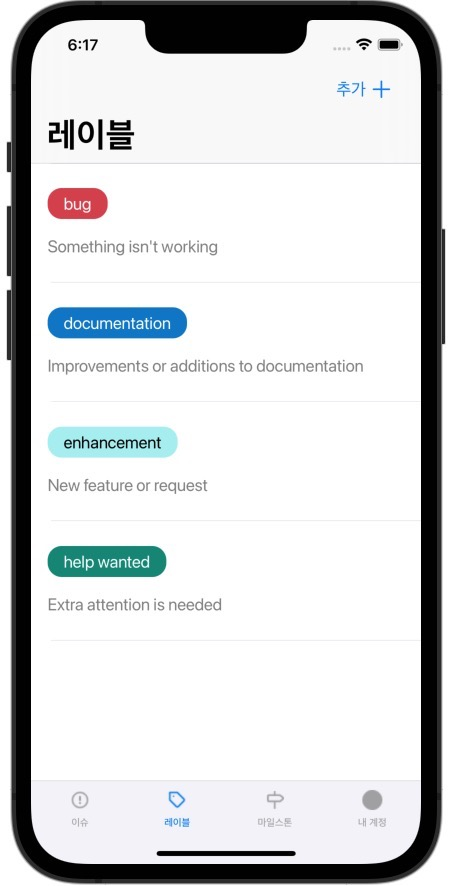
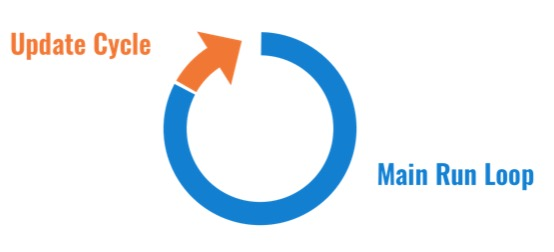

계기
UITableView는 Cell의 Subview들의 Constraints만 잘 잡아주면 Cell의 높이가 동적으로 설정되는 기능을 이용하려 했습니다.
그런데 아무리해도 Cell의 높이는 45 point로 그대로였고, 이거 떄문에 2시간동안 Constraints만 엄청 수정했습니다..
포기하고 자려고 하다가, 자기 직전에 요즘 버릇인 UIView 내의 layoutSubviews() 메소드에서 Subview들의 Constraints를 잡아주던게 떠올라, Subview들의 Constraints 설정하는 코드를 모두 초기화 생성자로 옮겼더니 그제서야 TableView Cell의 높이가 동적으로 설정되었습니다..

(완성된 내 TableView! 다 하고보니 동적 높이 Cell은 필요없었다..)
아무튼 layoutSubview() 메소드를 사용해서 문제가 생겼던 탓에, View의 Layout 업데이트 관련 메소드와 View의 Life-Cycle에 관련해 알아보려고 합니다!
iOS Layout
Demystifying iOS Layout - [1] 포스팅의 일부를 번역했습니다.
Update Cycle(업데이트 주기)
Update Cycle은 앱이 모든 이벤트 처리 코드를 실행한 후 Main run loop로 컨트롤을 넘겨주는 시점입니다.

이 시점에서 시스템은 Layout, Display 및 Constraints를 업데이트하기 시작합니다. 이벤트 handler를 처리하는 동안 View의 변경을 요청한다면, 시스템은 해당 View를 redraw가 필요한 것으로 표시해놓습니다.(the sysytem will mark the view as needing redraw.) 그리고 다음 Update Cycle에서 시스템은 표시된 View들의 변경 사항을 실행합니다.
Update Cycle은 60[fps]로 동작하기 때문에 사용자는 UI 업데이트 지연을 느끼지는 못하지만, 이벤트가 처리되는 시점과 해당 뷰를 다시 그리는 시점 사이의 interval 때문에 우리가 원하는 Run Loop의 시점에 뷰가 업데이트되지 않을 수도 있습니다.
따라서 Run Loop, Update Cycle 및 UIView의 특정 메소드를 이해하면 이러한 종류의 문제를 방지하거나 디버깅하는데 도움이 될 수 있습니다.
Layout
뷰의 Layout은 스크린에서 뷰의 size와 position을 의미합니다.
UIView는 뷰의 Layout이 변경되었음을 시스템에게 알리는 메소드를 제공할 뿐 아니라, 뷰의 Layout이 다시 계산된 후 수행할 작업을 정의하기 위해 오버라이딩할 수 있는 메서드를 제공합니다.
layoutSubviews
layoutSubviews() 메소드는 뷰와 모든 Subview들의 위치 조정(repositioning) 및 크기 조정(resizing)을 처리합니다.
해당 메소드는 재귀적으로 해당 뷰의 모든 Subview들의 layoutSubviews() 메소드를 호출하기 때문에 비용이 많이 드는 메소드입니다. 시스템은 뷰의 frame을 다시 계산할 때마다 이 메소드를 호출하기 때문에 frame을 설정하고 위치 및 크기를 조정할 때 이 메서드를 오버라이딩해야 합니다. 그러나 Layout을 업데이트할 때 layoutSubviews() 메소드를 직접 호출하는 것은 금지되어 있습니다. 대신, Run Loop동안 layoutSubviews()의 호출을 트리거하는, layoutSubviews() 자체를 호출하는 것보다 훨씬 비용이 적은 방법들이 있습니다.
layoutSubviews() 메소드가 완료되면 viewDidLayoutSubviews() 메소드에 대한 호출이 해당 뷰를 소유한 뷰 컨트롤러에서 트리거됩니다. layoutSubviews()는 뷰의 Layout이 업데이트된 후 안정적으로 호출되는 유일한 메소드이므로, Layout 및 Sizing에 따라 달라지는 모든 로직을 viewDidLoad()/ viewWillAppear()가 아니라, viewDidLayoutSubviews()에서 처리해야 합니다. 이 방법만이 오래된 Layout과 positioning 변수를 다른 계산에서 사용하는 것을 피할 수 있는 유일한 방법입니다.
Automatic refresh triggers
뷰의 Layout이 변경되었음을 시스템에 알리는 다음 이벤트들은 개발자가 수동으로 수행하지 않고도 다음 기회에 자동으로 layoutSubviews()가 호출됩니다.
- 뷰를 Resizing하는 이벤트
- Subview 추가하는 이벤트
- 유저가 UIScrollView를 스크롤하는 이벤트 (UIScrollView와 그것의 Superview의 layoutSubviews() 호출)
- 디바이스 회전
- 뷰의 Constraints 변경
위의 이벤트들은 모두 뷰의 위치를 다시 계산해야한다는 것을 시스템에 전달하고, 자동으로 최종 layoutSubviews()의 호출로 이어집니다. 하지만 layoutSubviews()를 직접 트리거하는 다음 방법들도 있습니다.
setNeedsLayout()
setNeedsLayout() 메소드는 layoutSubviews()를 트리거하는 가장 비용이 적은 메소드입니다. 이 메소드는 뷰의 Layout을 다시 계산되어야함을 시스템에 알려줍니다.
하지만 setNeedsLayout() 메소드는 즉시 실행되고 반환되지만, 반환되기 전에 뷰를 실제로 업데이트하지는 않습니다. 대신, 시스템이 다음 Update Cycle에서 해당 뷰와 모든 Subview들의 layoutSubviews()를 호출하게 합니다.
layoutIfNeeded()
layoutIfNeeded() 메소드가 호출되면 뷰의 Layout 업데이트가 필요한 경우 시스템은 즉시 layoutSubviews()를 호출합니다. 하지만 뷰를 업데이트해야하는 경우가 아닐 때에 해당 메소드가 호출될 경우에는 layoutSubviews()가 호출되지 않습니다.(LayoutIfNeeded()가 동일한 Update Cycle동안 두 번 호출될 경우에도 두 번째 호출은 layoutSubviews()를 트리거하지 않음.)
layoutIfNeeded() 메소드는 위의 setNeedsLayout() 메소드와는 다르게, 메소드가 반환되기 전에 해당 뷰와 Subview들을 다시 그리고 Layout이 업데이트됩니다. 이 메소드는 다음 Update Cycle까지 기다릴 수 없는 경우(새로운 Layout에 의존해야하는 때)에 유용하지만, 이런 경우가 아니라면 setNeedsLayout() 메소드를 호출해 Run Loop당 한 번 뷰를 업데이트하는 것이 이상적입니다.
layoutIfNeeded() 메소드는 Constraints에 대한 변경을 애니메이션하는 상황에서 특히 유용합니다. 애니메이션이 시작되기 전에 모든 Layout 업데이트가 전달되어야 한하는 상황에는 애니메이션 블록이 실행되기 전에 layoutIfNeeded() 메소드를 호출해야 합니다. 새로운 Contraints를 설정하고, 애니메이션 블록 안에서는 또 layoutIfNeeded()를 호출해 애니메이션이 새로운 상태로 진행되도록 해야합니다.